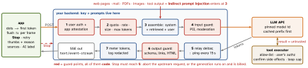

ai · folio
In one line: An LLM feature is a distributed system with an untrusted component: the app never holds a vendor key — it calls your backend, which authenticates user and app, enforces quotas, assembles the prompt, guards input and output, meters tokens and relays a stream. Everything the model reads can carry instructions; everything it writes is untrusted input to the next system. Safety comes from what the model can do, not from what the prompt says.
Download PDF Print view LaTeX source


| Oct 2026 | Anthropic Messages API | OpenAI Responses API | Apple Foundation Models (on device) | |||
|---|---|---|---|---|---|---|
| stream | content_block_delta (text_delta) … message_stop; ping; event: error mid-stream (overloaded_error, else HTTP 529) | response.output_text.delta … response.completed; error | streamResponse yields snapshots of the whole partial value, not deltas | |||
| typed output | output_config.format json_schema (GA); no recursion, no minimum/maxLength; a refusal or max_tokens stop breaks the schema | text.format json_schema + strict: true: every field required, additionalProperties: false; refusal comes as a separate item | @Generable type + @Guide(description:, .range(0...20)); constrained sampling: never malformed | |||
| tool call | stop_reason "tool_use", block tool_use{id, name, input}; input streams as partial JSON; a model may guess missing arguments | item function_call{call_id, name, arguments} — arguments are a JSON string; parallel_tool_calls | Tool protocol; the framework itself calls call(arguments:) and feeds the output back | |||
| result | tool_result{tool_use_id} in the next user turn | function_call_output{call_id, output} | automatic — so authz + confirmation live inside call | |||
| cost, limits | every id a pinned snapshot; 1M context; cache read 0.025–0.1× input, write 1.25× (5 min) / 2× (1 h); batch -50 %, most <1 h | caching automatic from 1,024 tokens, read 0.1× (GPT-5.6+); batch -50 %, 24 h window | free; 4,096 tokens (iOS 26) — read contextSize, tokenCount(for:) (26.4) |
Streaming to the UI — SSE: text/event-stream, UTF-8 only
event: delta | type (none = message) | |
data: {"text":"Hel"} | payload; several data: lines join with LF | |
(blank line) | dispatches the event | |
: ping | comment, ignored; send every ∼15 s — proxies drop idle links | |
id: 42 | resent as Last-Event-ID on reconnect | |
retry: 3000 | reconnection delay, ms |
- nginx:
proxy_bufferingis on by default — small chunks wait in buffers; per responseX-Accel-Buffering: no.proxy_read_timeout60 s between two reads closes on a model that thinks before its first token, unless you ping. - iOS:
URLSession.bytes(for:)(iOS 15). Its.linesskips blank lines(unverified): multi-line events merge — split the bytes yourself. - React Native:
fetchhas no streamingresponse.body(issue #27741, open since Jan 2020) — useexpo/fetch(WinterCG fetch, streams) or an SSE library. - Partial output is hard to moderate (OpenAI): show it as it streams, but act on links, tool calls and JSON only after the final, validated message.
func stream(_ prompt: String) -> AsyncThrowingStream<String, Error> {
AsyncThrowingStream { cont in
let task = Task {
do {
var req = URLRequest(url: chatURL) // YOUR API, never the vendor's
req.httpMethod = "POST"
req.setValue(session.bearer, forHTTPHeaderField: "Authorization")
req.httpBody = try JSONEncoder().encode(ChatRequest(prompt: prompt))
let (bytes, _) = try await URLSession.shared.bytes(for: req)
for try await line in bytes.lines where line.hasPrefix("data: ") {
cont.yield(try decodeDelta(line.dropFirst(6))) } // 1 data: per event
cont.finish()
} catch { cont.finish(throwing: error) }
}
cont.onTermination = { _ in task.cancel() } // Stop, or view gone
}
}Stop → Task cancelled → connection dropped → server aborts upstream. Render: buffer, flush ≈ per frame, incremental Markdown, auto-scroll only at the bottom.
On device — the APIs
- Apple (iOS 26+):
SystemLanguageModel.default.availability→.deviceNotEligible·.appleIntelligenceNotEnabled·.modelNotReady. Instructions outrank the prompt: user or web text in instructions is prompt injection (Apple). Guardrails check input and output (.guardrailViolation);.permissiveContentTransformationsrelaxes them for plain strings only. - iOS 27:
LanguageModelprotocol — one session API over the system model,PrivateCloudComputeLanguageModel(32,000 tokens, entitlement, no API cost under 2M first-time downloads), Anthropic / Google packages. Firebase Apple SDK 13.0.0 (7 Oct 2026):GeminiLanguageModel,HybridModelgone. - Android: Gemini Nano runs in AICore, which ships and updates the model and keeps no record of inputs or outputs. ML Kit GenAI: Prompt (beta), Summarization, Proofreading, Rewriting, Image Description, Speech Recognition.
- Firebase AI Logic hybrid:
PREFER_ON_DEVICE·ONLY_ON_DEVICE·PREFER_IN_CLOUD·ONLY_IN_CLOUD. Android experimental: on-device ≤4,000 tokens, English + Korean, foreground only; web GA (Chrome 139+).
Store and law
App Store 5.1.2(i): disclose sharing personal data “with third-party AI” and get explicit permission first. Google Play: AI-generated content needs in-app report/flag without leaving the app. EU AI Act Art. 50 (from 2 Aug 2026): tell people they talk to an AI unless obvious; mark synthetic output machine-readably.
Prompt injection — solved by design, not by prompting
Agents Rule of Two (Meta, Oct 2025): within one session an agent may have at most two of A, B, C; all three need a human approval or a fresh context. Same shape as the lethal trifecta (Willison, Jun 2025): private data + untrusted content + a way to communicate out = data theft. Guardrail classifiers: “95 % is a failing grade” in security.
- Indirect injection (Greshake et al., Feb 2023): retrieved data acts as instructions — pages, mail, RAG documents, images, tool results. RAG and fine-tuning do not fix it (OWASP).
- Exfiltration with no tools at all: output containing
leaks when the image loads — render as text, allow-list image hosts. - Six patterns (Beurer-Kellner et al., 2025): action-selector · plan-then-execute · LLM map-reduce · dual LLM · code-then-execute · context-minimisation. Rule: once untrusted input is in, no consequential action may follow from it.
OWASP Top 10 for LLM Applications 2025 — in an app
| 01 | Prompt Injection | limit what it can do; untrusted text in its own slot | ||
| 02 | Sensitive Information Disclosure | send, log and answer with only the data needed | ||
| 03 | Supply Chain | models, adapters, SDKs: pin and verify | ||
| 04 | Data & Model Poisoning | fine-tune sets, RAG corpus | ||
| 05 | Improper Output Handling | treat the model as a user: XSS, SSRF, SQL, deep links | ||
| 06 | Excessive Agency | too much functionality, permission, autonomy | ||
| 07 | System Prompt Leakage | “not a secret, nor a security control” | ||
| 08 | Vector & Embedding Weaknesses | per-user access in the store; inversion | ||
| 09 | Misinformation | cite sources; human check where it matters | ||
| 10 | Unbounded Consumption | denial of wallet; model extraction via the API |
Keys, quotas, abuse
- No vendor key in the binary — Firebase: “you should not add a Gemini API key into your app’s codebase”. Prompts server-side too: server prompt templates; template-only mode answers raw prompts with 403. Own proxy: per-user quota, size cap,
max_tokens, timeouts, spend alerts. - Firebase AI Logic: App Check enforcement required from 2 Nov 2026; limited-use tokens are one-time, 5-min TTL; default 100 requests/min per user.
RAG, evals, cost
- RAG (Lewis et al., 2020): chunk → embed → top-k → quote with sources. BM25 + contextual embeddings + reranking cut failed retrievals 49 % / 67 %; under 200,000 tokens, put the whole corpus in the prompt (Anthropic, Sep 2024). Models miss facts in the middle of long contexts (Liu et al., 2023).
NLContextualEmbedding(iOS 17) returns per-token vectors afterrequestAssets— pool them. 10,000 chunks × 384 floats × 4 B = 15 MB: brute force fits. New embedding model = re-embed everything.- LLM-as-a-judge (Zheng et al., 2023): >80 % agreement with humans, but position, verbosity and self-enhancement bias — swap order, judge with another model. Golden set re-run on every prompt or model change; thumbs-down become cases.
- Tokens ≠ characters: 3–4 chars English, ∼1 CJK (Apple); 1M tokens ≈ 2.5M chars on Claude’s current tokenizer. Output costs 5× input (Opus 5.5: $4 / $20 per MTok). Using tools adds a hidden 264–804-token system prompt.